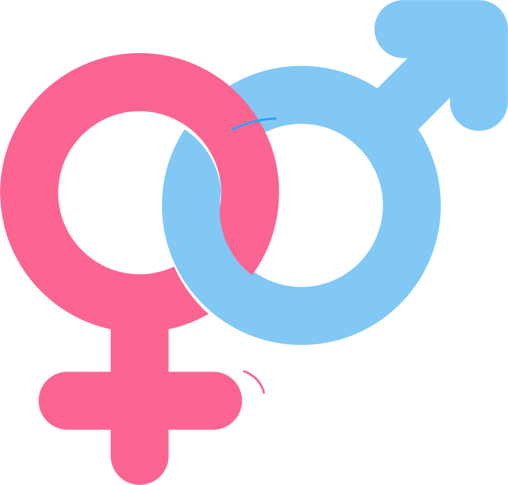

Body Mass Index (BMI) is a tool used to determine whether your weight is within a healthy range according to your height. Use this BMI calculator to monitor your health and take the right steps to achieve ideal body balance. Enter your weight, height, and age in the columns provided, then click the 'Calculate BMI' button to see the results. The BMI calculation results will give you an idea of whether you are underweight, normal, overweight or obese.

Please Select Your Gender
Result
Your BMI Is N/A
Underweight (less than 18.5)
Consider increasing your calorie intake by choosing nutrient-dense foods. Focus on foods such as nuts,
seeds, lean meats, dairy products, and fruits and vegetables. Consult a nutritionist or doctor for a
safe and healthy weight gain plan.
* This BMI calculator is for reference only and does not replace professional medical advice.
Always consult a doctor or nutritionist for a more accurate health evaluation.
Result
Your BMI Is N/A
Normal (18.5 - 24.9)
Continue to maintain a healthy lifestyle eat a balanced diet and exercise regularly. Have regular health checks
to ensure your body remains in optimal condition.
* This BMI calculator is for reference only and does not replace professional medical advice.
Always consult a doctor or nutritionist for a more accurate health evaluation.
Result
Your BMI Is N/A
Overweight (25.0 - 29.9)
Adopt a healthier diet by reducing your intake of high-calorie foods, sugar and saturated fat. Add more vegetables, fruits and lean protein to your diet. Increase
physical activity, such as walking, running, or swimming. Consult a healthcare professional for more personalized
guidance.
* This BMI calculator is for reference only and does not replace professional medical advice.
Always consult a doctor or nutritionist for a more accurate health evaluation.
Result
Your BMI Is N/A
Obesity (30.0 - more)
It is important to take steps to reduce weight. Start by adopting a healthier, lower calorie diet. Do regular physical activity, at least 150 minutes per week, such as
brisk walking, cycling, or other activities that increase your heart rate. Working with a doctor or nutritionist can help you create
an effective and safe weight loss plan.
* This BMI calculator is for reference only and does not replace professional medical advice.
Always consult a doctor or nutritionist for a more accurate health evaluation.